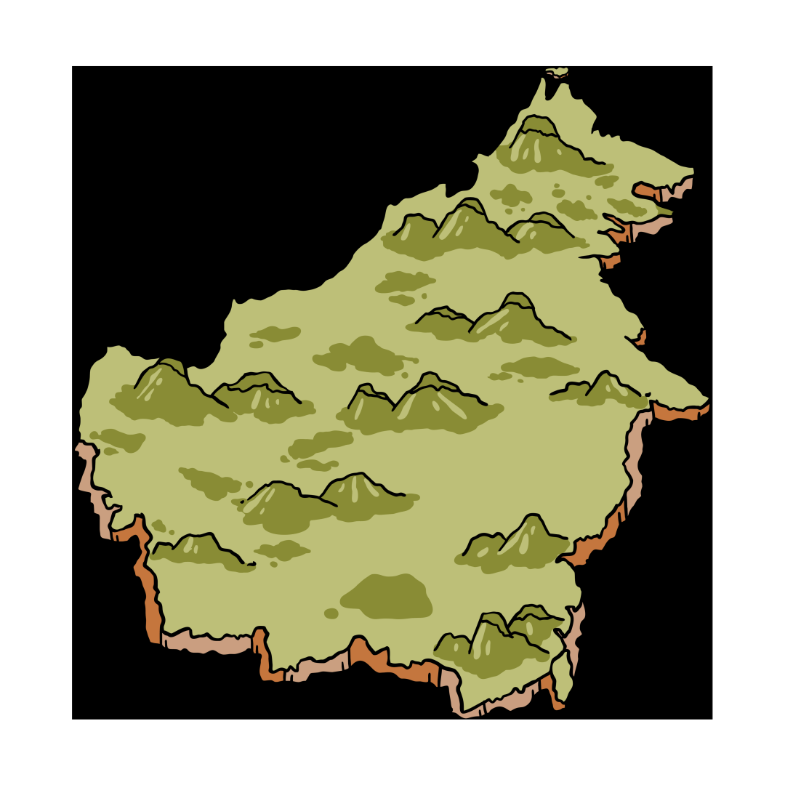
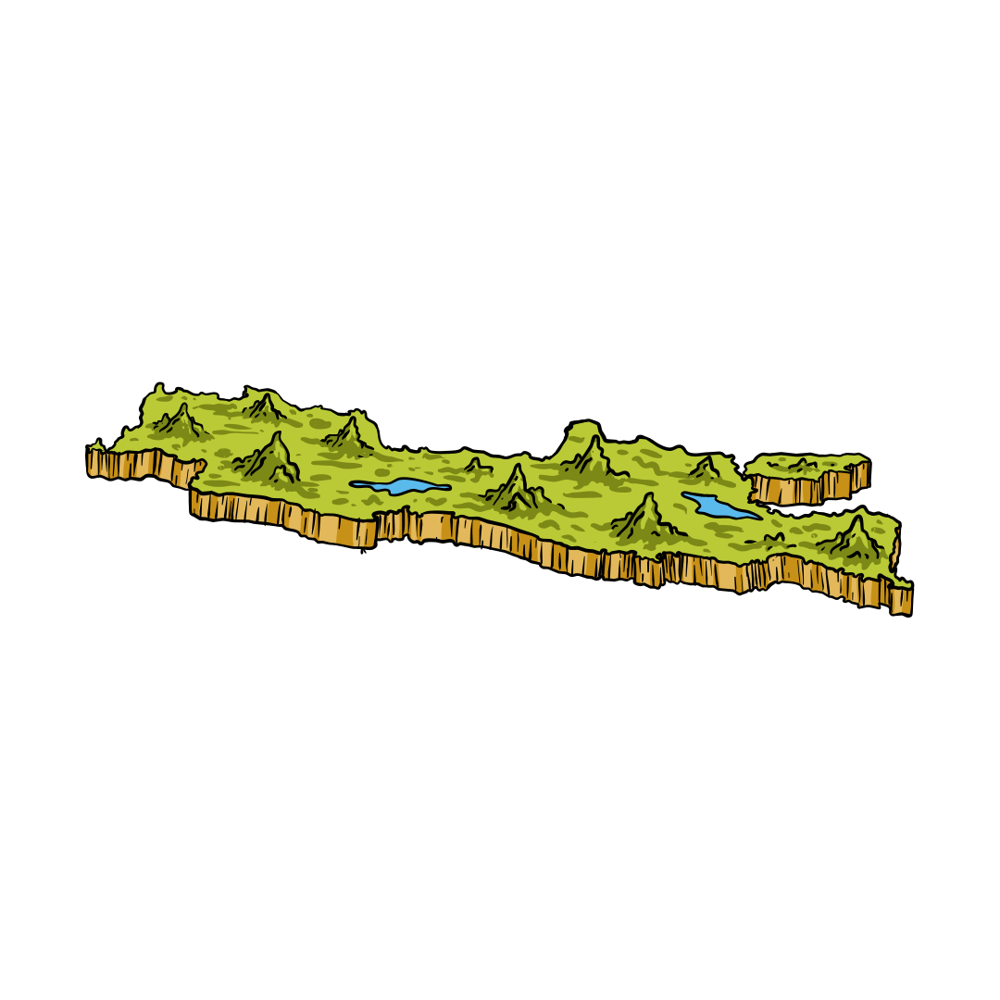
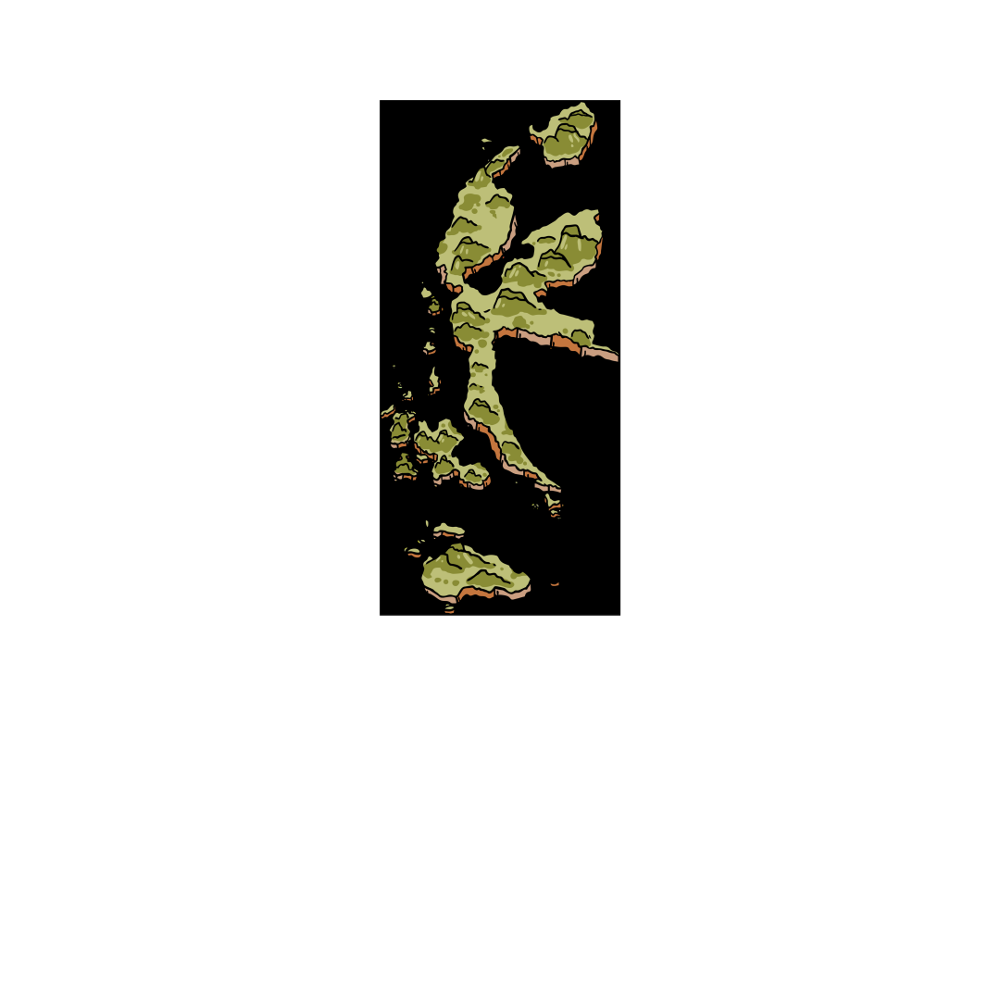
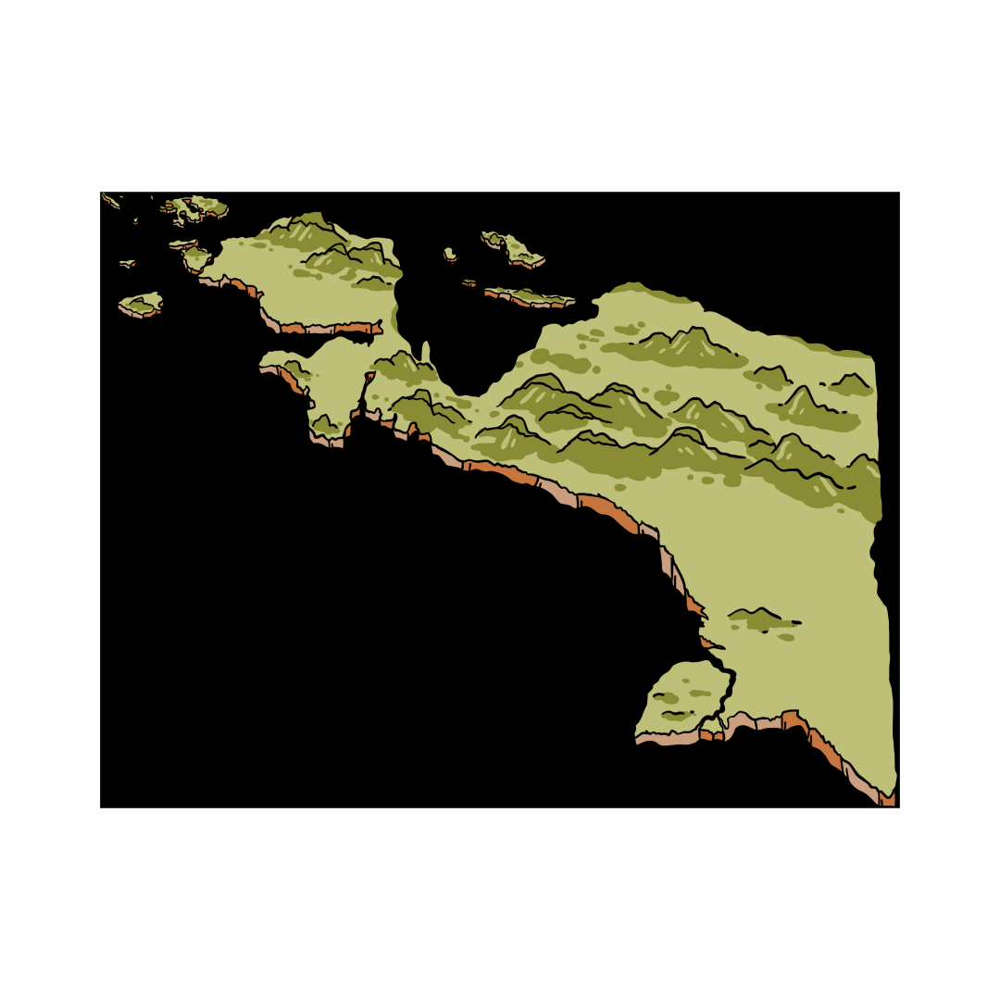
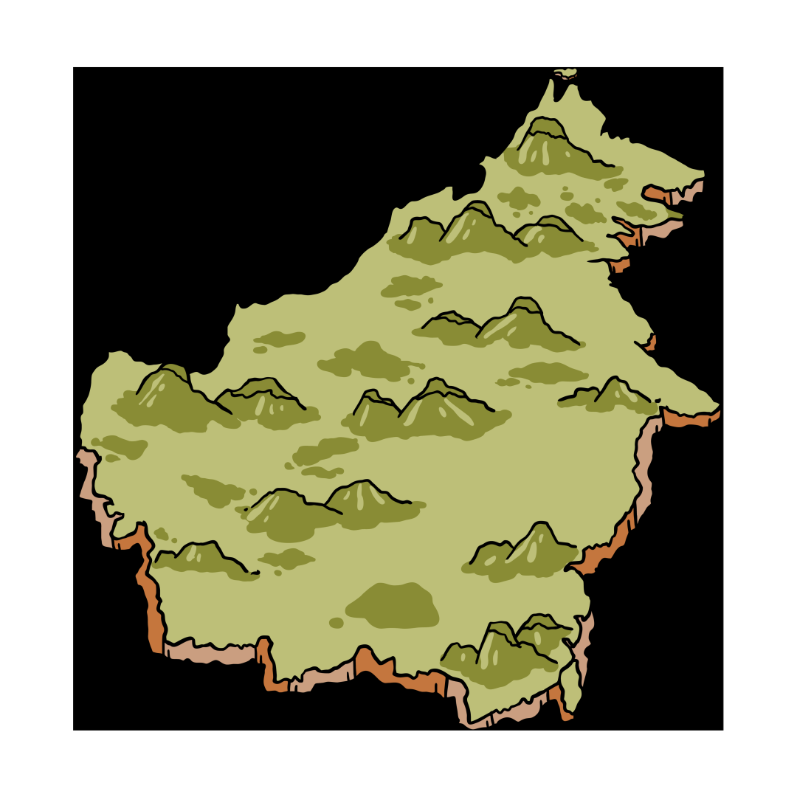
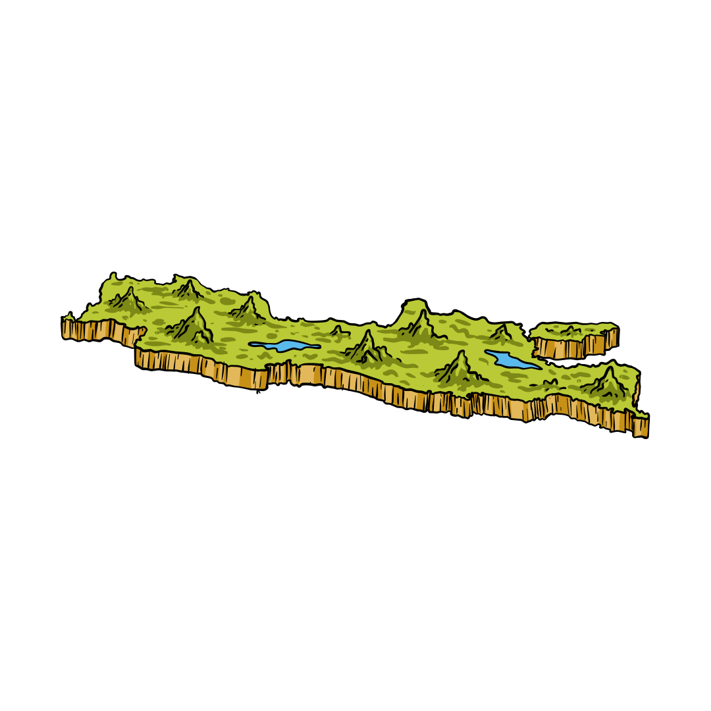
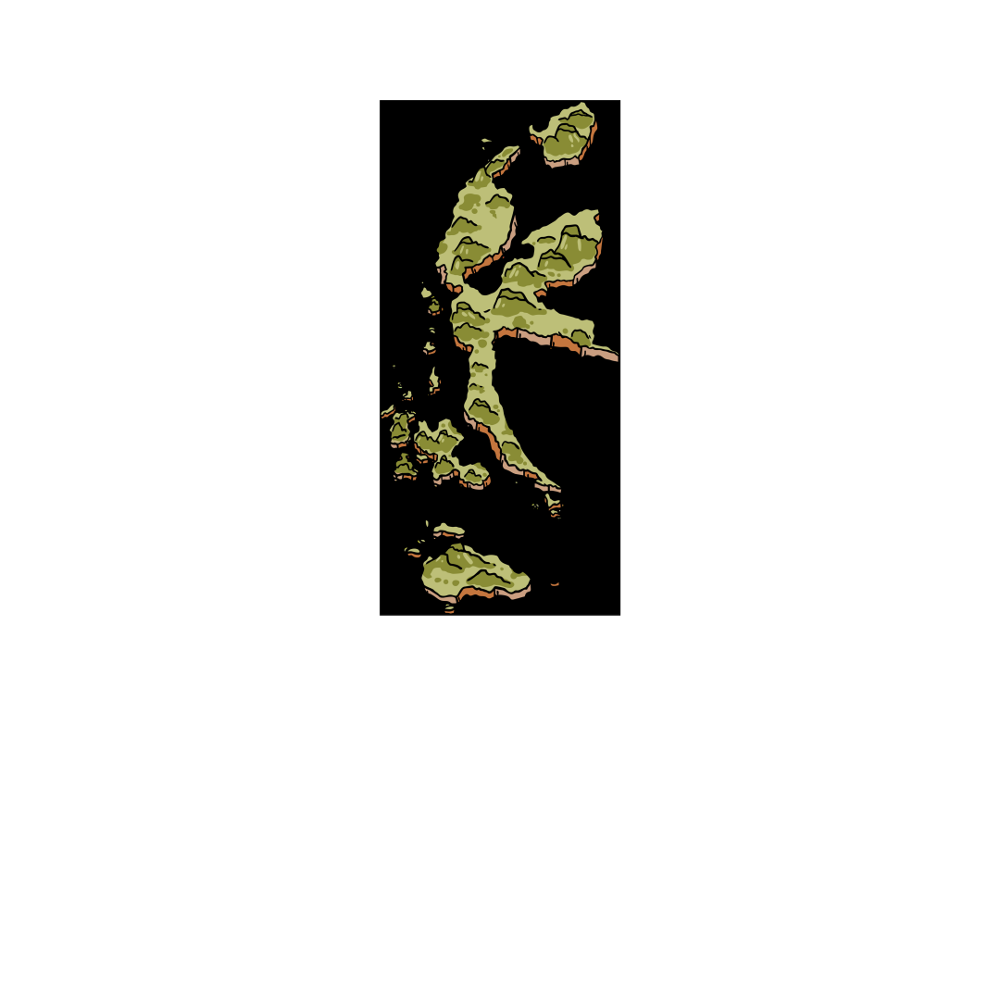
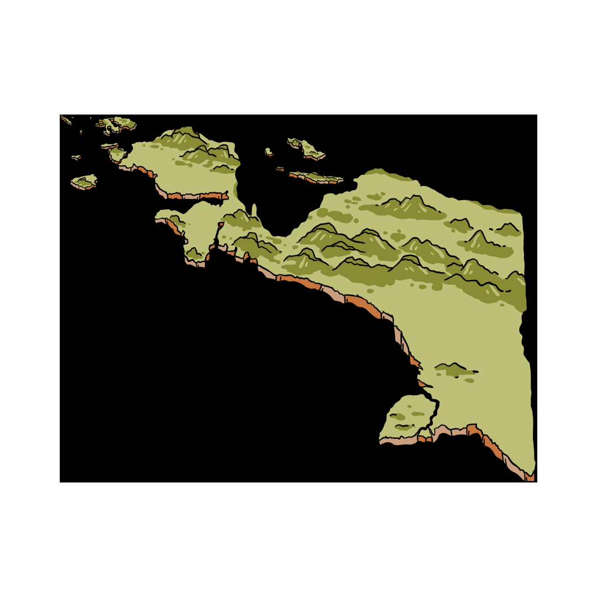

Rafflesia Arnoldi
Rafflesia arnoldii adalah bunga terbesar di dunia dan merupakan flora endemik Sumatra (terutama Bengkulu, Sumatra Barat, dan Sumatra Selatan). Bunga ini tidak memiliki daun, batang, dan akar, serta hidup sebagai parasit pada tanaman inang tertentu. Saat mekar, bunga mengeluarkan bau menyengat seperti bangkai untuk menarik serangga penyerbuk. Kelangkaannya disebabkan oleh kerusakan hutan dan sulitnya siklus hidup bunga ini.